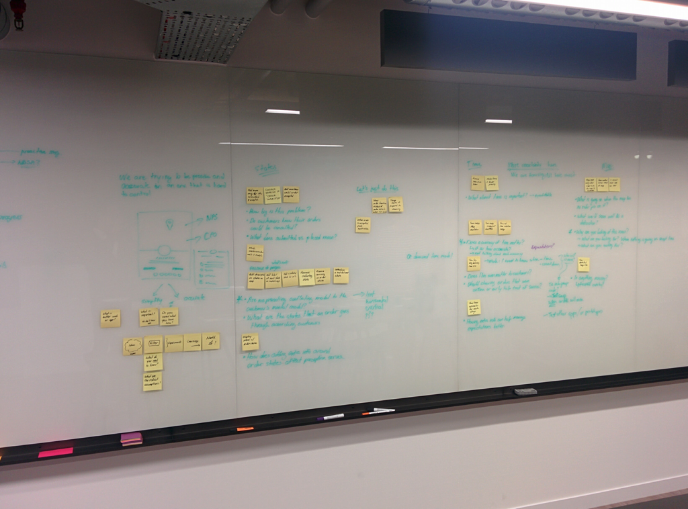
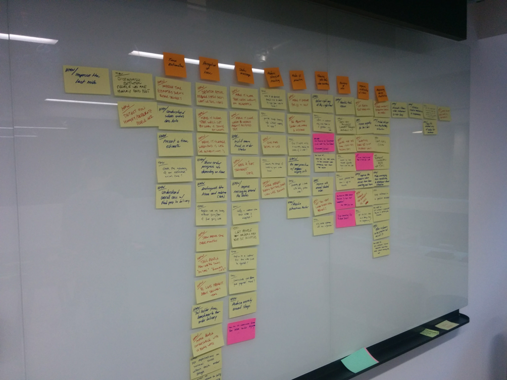

This case study was chosen to highlight workshop skills and importance of going out to see your users.
The Brief
While working for Pivotal Labs, I had the opportunity to work with an online food delivery company.
The product team that I worked with was trying to solve the issue of "Where is my order?" because it was the cause of a large volume of support calls and the business felt there were some opportunities to fix it.
The Process
I helped lead an initial workshop which included senior stakeholders, customer service manager, UX reesearch, engineers, and product managers.
Our approach was to understand the problem to have everyone tell their side of the problem so that we could get the full perspective.
Putting down opportunities
Mapping the order journey
Story mapping
Opportunities
As a team we indentified the following areas where we could focus on:
- Initial: Ensure that the customer is ordering to the correct address initially
- During: Show notifications if there are issues during delivery
- Post order: How might we improve customer service representatives assist when tech fails
For the purpose of this case study (and reasons of non-disclosure), we will focus on the customer service experience.
Customer service representatives (CS reps) had to update the address of the user if the initial address was not correct. We thought the best way to do this was to just show the initial address along with the new address entry so that CS reps could check the differences
Initial change address design
We went out to the customer service centre after designing a this design and to get more insights on how they handled service calls.
When we observed the CS reps, we noticed that when fielding calls about address change, they had Google maps opened in addition to the admin interface. What we learnt from this experience were the following things:
- CS reps didn't live in the cities of the customer so they had little context of the location
- Google maps helped them orient the CS reps while the customer stated the new address
- CS reps had to copy the address back into the admin tool
We applied these new lessons into an updated design which integrated an interactive Google maps and Google address lookup to remove the need to have an extra maps tab open.
Updated change address design
The Outcome
The change in design reflected actual user experiences and when updated designs were tested with the CS reps, it was well received as a potential process improvement due to the elimination of context switching while on call with customers.
The moral of the story is that you should always try to test your prototypes in the context of the users.